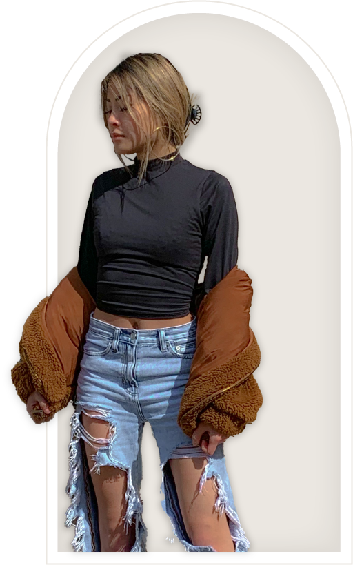

GitHub
Pinterest
LinkedIn
About
Blog
GitHub
Pinterest
LinkedIn
About
Blog
Hello,
I'm Olivia

I'm a third-year undergraduate student at the University of Wisconsin Oshkosh.
I enjoy designing thoughtful and minimalistic digital experiences. I believe that web should be useful and accessible.
I mostly use semantic HTML, CSS, and JavaScript, and I'm currently learning Java.
I'm an advocate for social justice, neurodiversity, and disability awareness.